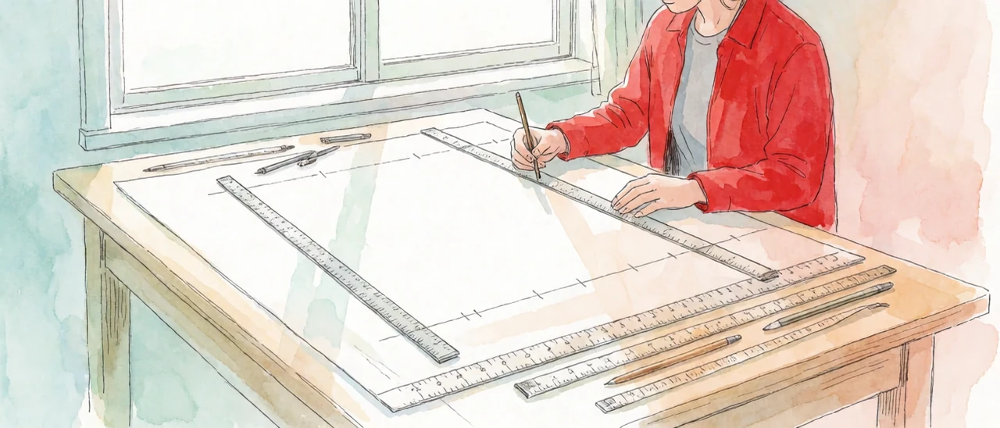

1. 방 하나 고르기
이사할 방을 고른다고 하자. 누구나 머릿속에서 몇 가지를 따진다. 월세가 얼마인지.. 역까지 몇 분인지.. 햇빛이 드는지. 따지는 항목이 셋이면 방 하나는 세 개의 값으로 적힌다. 월세 45만 원.. 역까지 7분.. 남향.
월세를 만 원 단위로 볼지 천 원 단위로 볼지는 사람마다 다르다. 통장이 빠듯한 사람은 촘촘하게 보고.. 여유 있는 사람은 성기게 본다. 얼마나 촘촘하게 볼지는 방을 고르는 사정이 정한다.
이 글은 이 따지기에 이름을 붙인다. 따지는 항목 하나하나를 구분하는 것이 축의 이름인 축명이고.. 그 항목의 수가 축의 개수인 축수이다. 얼마나 촘촘하게 볼지를 가늠하는 기본 눈금이 단위이고.. 그 눈금으로 매겨진 값이 좌표이다. 이 넷을 묶은 틀을 축좌표계라 부른다.
흔히 그냥 차원으로 번역하는 디멘션(dimension)의 디(di-)는 가르다라는 어원에서 왔고.. 이것이 축이 된다. 그리고 멘션(mension)은 재다라는 어원에서 왔고.. 이것이 좌표가 된다. 그래서 디멘션의 적확한 한국어 풀이는 축좌표계가 되어야 한다는 입장이다. 그리고 애초에 이 축좌표계의 네 가지 구성 요소 자체가.. 디멘션에 대한 깊은 검토의 과정에서 도출된 것이기도 하다.
※ 이 디멘션과 얽혀.. 꽤 긴 시간 동안 변형과 교정을 거치며 자리 잡은 개념이 텐서이다. 텐서라는 이름은 당기다(tendere)에서 왔고.. 처음에는 해밀턴이 사원수의 크기를 가리키는 말로 썼다. 지금의 뜻에 가까운 용법은 포크트가 결정의 탄성과 응력을 다루며 붙인 것이다. 리치와 레비치비타가 이것을 좌표를 바꿔도 형식이 유지되는 양으로 정식화했고.. 아인슈타인의 일반상대성이론이 물리학의 표준 언어로 만들었다. 이 계열의 텐서는 원소 수가 정해져 있다. 공간의 차원 수를 텐서의 계수만큼 거듭제곱한 값이며.. 3차원 공간의 응력 텐서는 원소가 3×3=9개이다. 딥러닝의 텐서는 이 변환 규칙을 떼어 내고.. 여러 겹의 숫자 배열이라는 모양만 가져왔다. 초기의 용례와 이후 굳어진 용례는 서로 거의 관련이 없어 보일 만큼 달라졌고.. 지금도 여러 영역에서 전혀 다른 뜻으로 쓰인다. 현재의 대표 용례 둘은 <인지공리04_4>에서 나란히 놓고 비교한다.
2. 풀어야 할 문제 앞에서
방 고르기처럼 눈앞에 닥쳐 풀어야 할 문제를 이 글은 현안이라 부른다. 축좌표계에서 축의 개수는 현안 대응을 위한 검토에 요구되는 항목의 수가 된다. 모든 항목에는 기본 눈금을 확정하는 데 요구되는 정보량이 있고.. 그 눈금이 필요한 수준으로 확정되면 그 눈금으로 해당 항목의 좌표값이 측정된다.
인지연산의 기본 구성 요소는 축좌표계이며.. 축좌표계는 네 요소로 이루어진다. 축수·축명·단위·좌표이다.

3. 인지연산의 기본 양식
인간의 삶에서 의미 있게 작동하는 인지연산의 기본 틀은 다음과 같다. 목적의 출현 또는 도입.. 인지연산의 대상이 되는 항목 리스트의 확인.. 그 리스트 내부의 기준점 선명화.. 타겟에 대한 측정. 이 다축좌표계의 관측값을 기반으로 원하는 변화를 이끌어 내는 작용·행동을 실행하고.. 그 결과를 다시 좌표값의 변화로 측정한다.
실용의 격률을 통과한 인지연산은 이 순환을 돈다. 목적이 축을 고르고.. 축이 눈금을 요구하고.. 눈금이 측정을 가능하게 하고.. 측정이 다음 행동을 정한다. <인지공리01_0>에서 자일을 박고 오른다고 적은 확보된 거점은 이 순환 한 바퀴가 끝난 자리이다.
4. 실체의 배제
실용의 격률(퍼스)은 개념의 의미를 실천적 효과로 판정하는 기준이다. 이 격률에 실체를 통과시키면 실체 논의는 배제된다. 실체를 가정하든 가정하지 않든 관측·예측·결론·행동에 차이가 없기 때문이다. 그러므로 실체는 인지연산 프레임의 필수 요소가 아니다.
5. 남는 물음
실체가 빠지면 물음 하나가 남는다. 같은 것을 무엇으로 같다고 판정하는가. 실체가 있다면 같은 실체이므로 같다고 말하면 끝난다. 실체를 빼면 그 판정의 근거를 다른 곳에서 찾아야 한다. 이 물음은 <인지공리04_3>에서 받는다.
축을 세고.. 이름을 붙이고.. 눈금을 정하고.. 잰다.